将抓取的trace导入查看
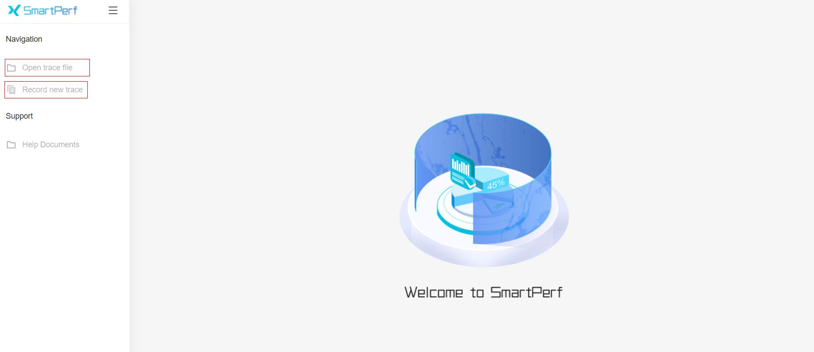
说明：
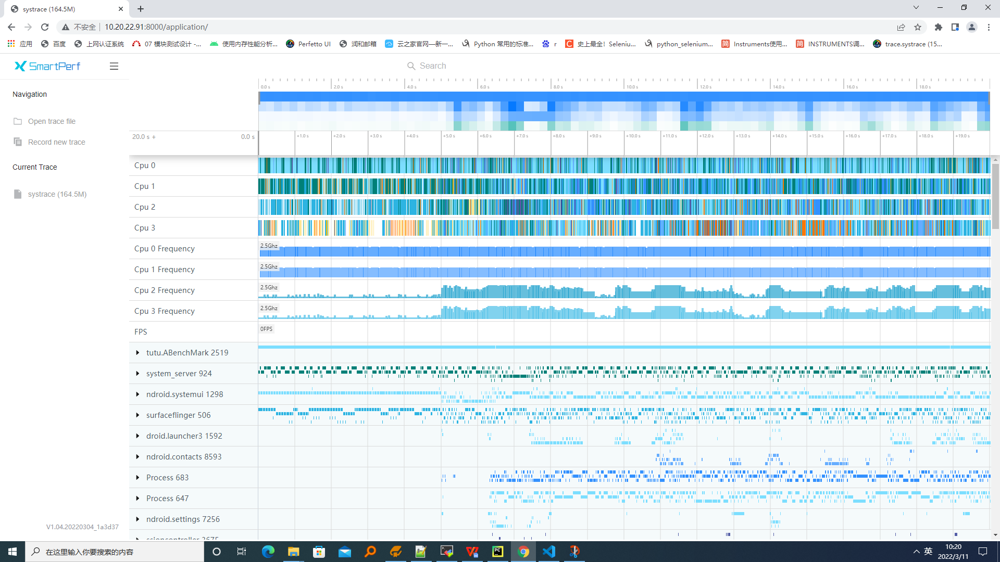
说明：
trace 模块从上往下主要展示时间轴和cpu使用率、cpu使用情况、进程间通讯数据的方法调用情况、进程、线程和方法调用情况
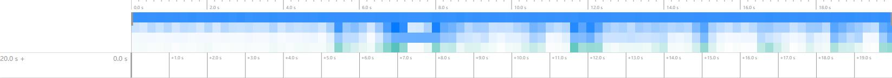
最上方带刻度的为时间轴，主要展示当前抓取数据的总时长和时间刻度的分布情况，如上图所示，左下角展示总时长，
中间区域展示的是抓取数据时间段内的cpu使用率，颜色越深代表cpu使用率越高，颜色越浅代表cpu使用率越低。
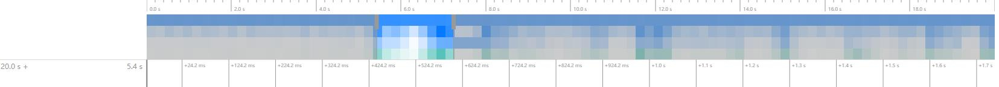
在白色背景时间轴区域内可以点击后拖拽鼠标，可以对从鼠标按下到拖拽完成鼠标松开的区域内的数据进行筛选，高亮显示的部分为当前所选区域，如上图所示
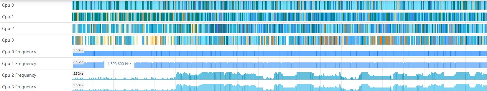
如上图所示，当前抓取数据有4个cpu工作，前四组数据对应的是当前调用cpu的线程和对应的进程情况，以颜色作为区分。后四组数据则为cpu的使用频率信息。鼠标移动到相应的线程上还会将当前选中的进程信息全部置为高亮，其他的进程会置灰，如下图所示
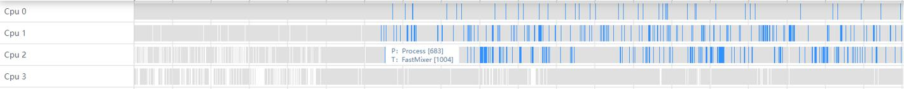
可以对cpu的数据进行框选，框选后在最下方的弹出层中会展示框选数据的统计表格,总共有七个tab页
CPU by thread的Tab页，主要显示了在框选时间区间内的进程名，进程号，线程名，线程号，总运行时长，平均运行时长和调度次数信息
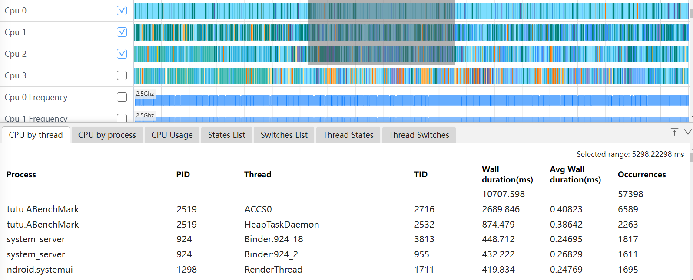
CPU by process的Tab页，主要显示了在框选时间区间内的进程名，进程号，总运行时长，平均运行时长和调度次数信息
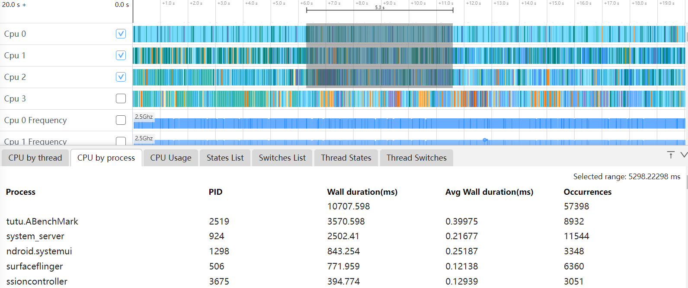
CPUUsage的Tab页，主要显示了在框选时间区间内，该频率时间占比前三的信息
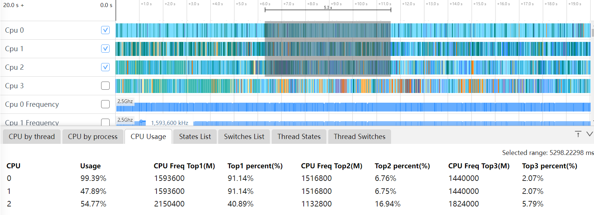
单选CPU使用情况数据，单击方法会在选中的方法外层加上深色边框，能够突出当前选中色块，弹出层中会展示当前CPU上的进程名，线程名，开始时间和运行时长，线程运行状态等信息
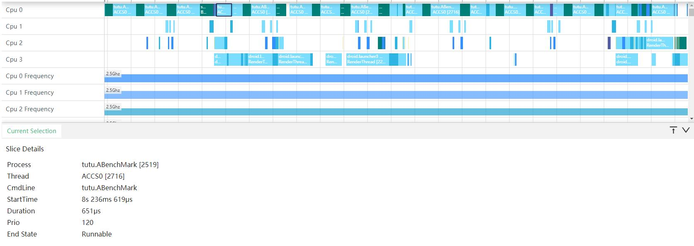
FPS是帧率的显示，每秒产生画面的个数
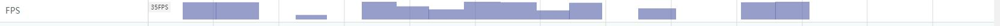
可以对fps的数据进行框选，框选后在最下方的弹出层中会展示框选时间区间内的统计表格,主要显示了time(时间)，FPS(帧率)
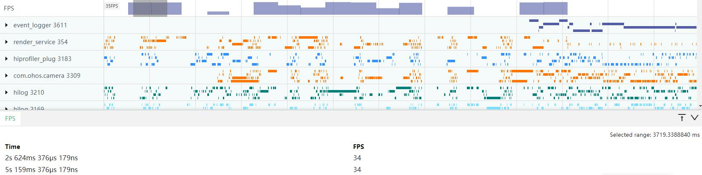
鼠标移动到帧率的柱状图上，悬浮框会显示当前时间的FPS的值
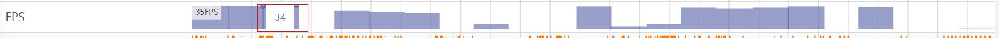
下图是进程数据，左边部分展示进程名称和id
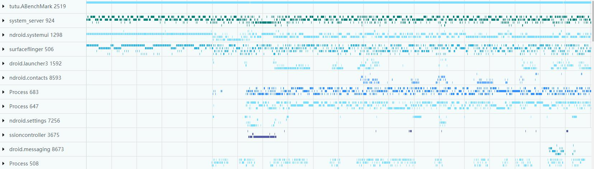
点击进程名前面向下箭头可以展开对应的线程进行查看，展开后的线程如下图，如果存在堆内存占用情况，就会显示在第一行，如果出现两个名字和id一样的线程，则第一个为线程的使用情况，第二为线程内的方法栈调用情况
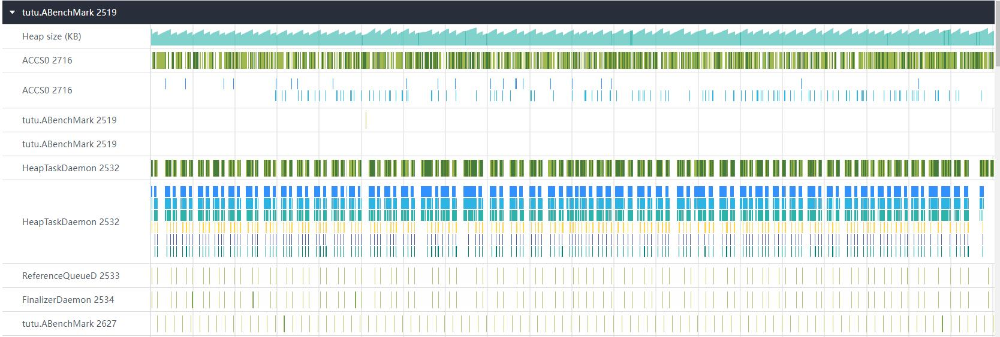
可以对线程的数据进行框选，框选后在最下方的弹出层中会展示框选数据的统计表格，包含线程运行状态，线程调用栈的统计情况。当框选的数据中同时存在线程运行状态和线程调用栈数据，下方的弹出层中就会出现多个tab选项，可以进行切换
下图是线程运行状态框选统计信息,包括进程名，进程号，线程名，线程号，线程状态，状态持续时间，平均持续时间，该线程状态发生的次数
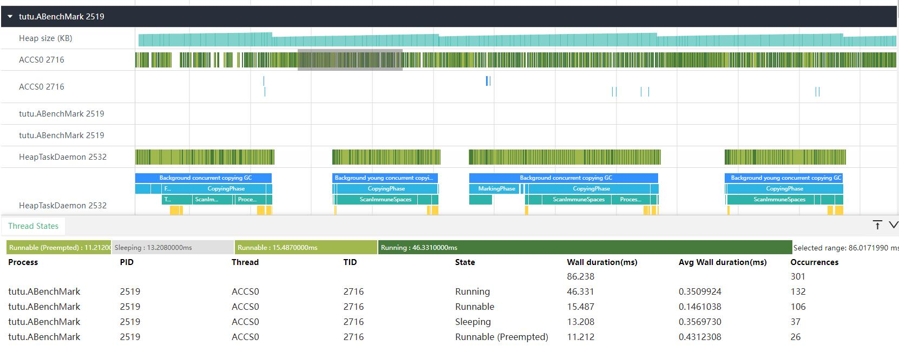
下图是线程调用栈框选统计信息,包括方法名，持续时间，平均持续时间，调用的次数
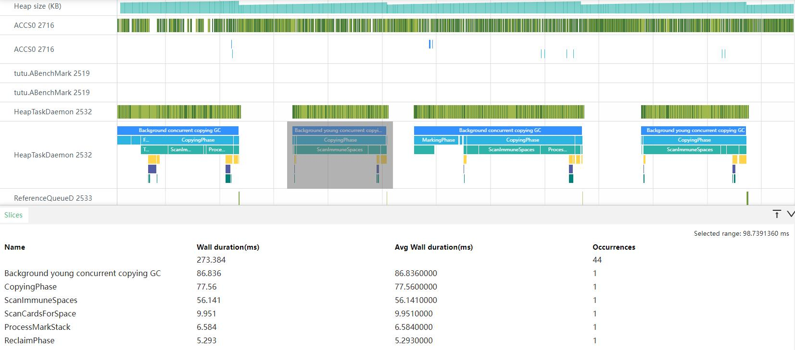
单选线程的state数据时，会展示当前选中线程的状态数据，开始时间和持续时长，线程状态，所在进程名称、
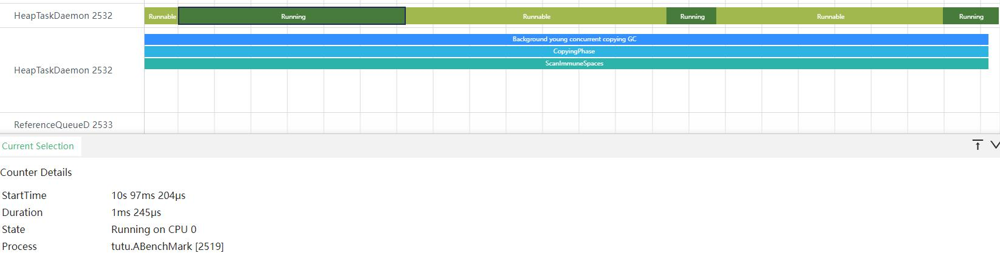
单选调用栈数据，单击方法会在选中的方法外层加上黑色边框，能够突出当前选中的方法，弹出层中会展示当前方法的名称、开始时间和运行时长信息。
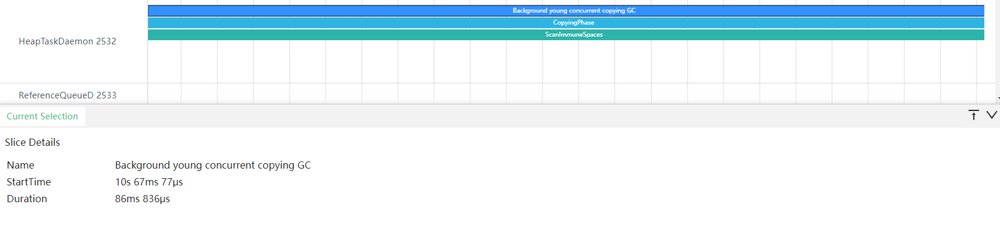
点击画红框处的带箭头的标志，会从CPU的线程概览视图跳转到线程的详情视图，同时从线程的详情视图也能跳转到CPU的线程概览视图
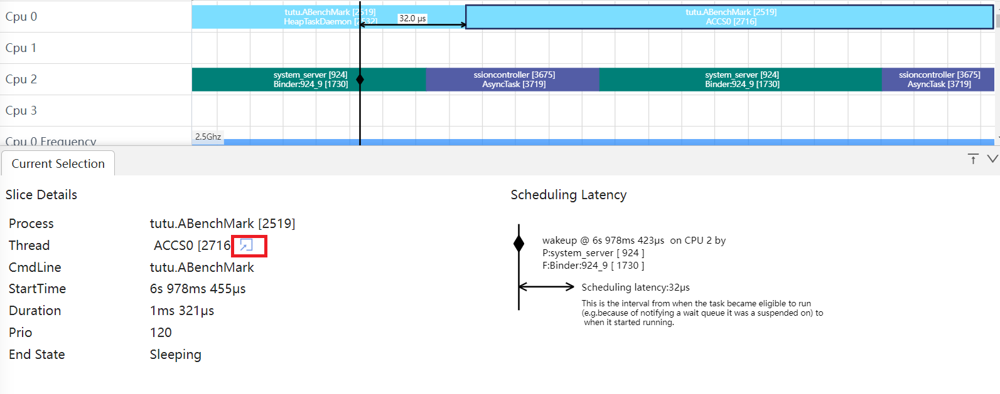
将选中数据的时间点通过小旗的方式在时间轴上展示，直观的展示选中数据的时间
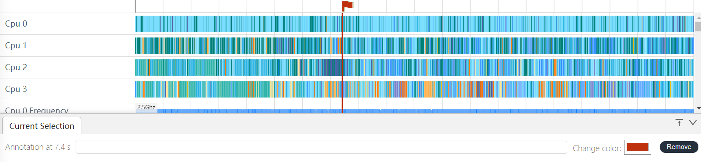
在下方输入空输入文字:我是trace,可以给小旗打备注
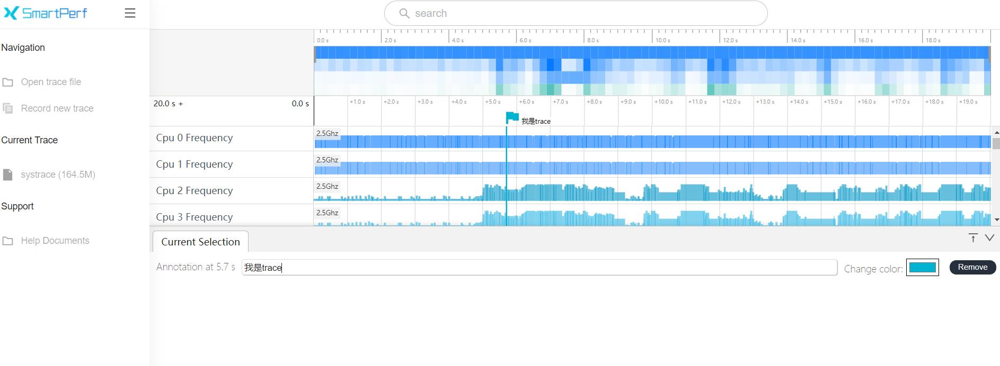
鼠标移动到某个页签，会出现星形的标志，点击该星形，可以将该行收藏置顶
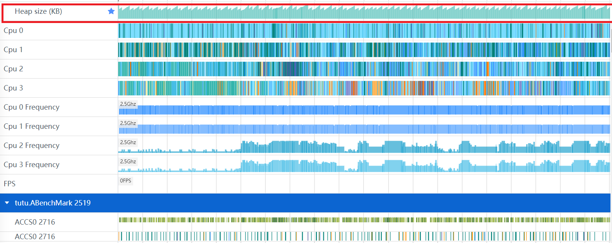
框选某一区域，该区域左边会出现CheckBox的复选框。选中的区域的复选框会出现打勾的状态。可以取消勾选，也可以重新勾选
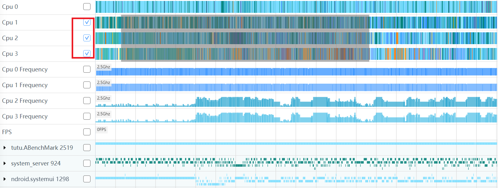
在搜索框中，可以输入线程，线程号等搜索自己想要的信息,搜索完成会高亮显示
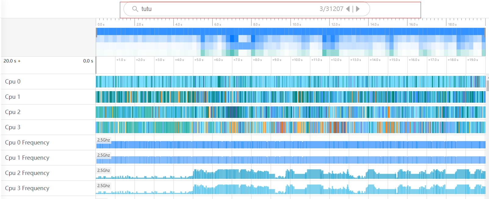
在搜索框中输入调用栈的方法名，会跳转到对应的调用栈
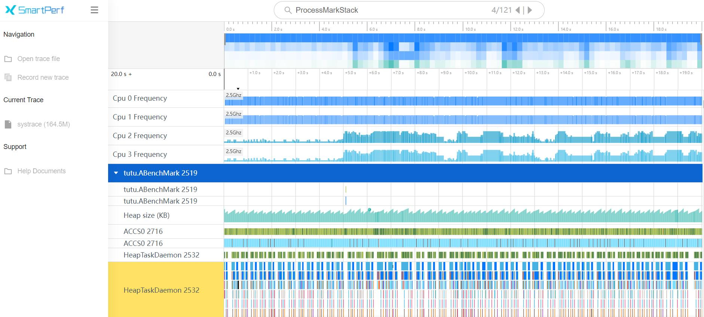
放大trace中的色块,选中色块,键盘按下M，会出现像尺子一样的形状
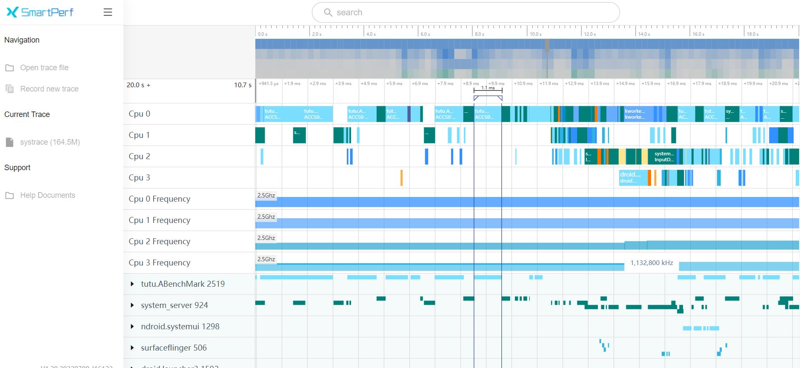